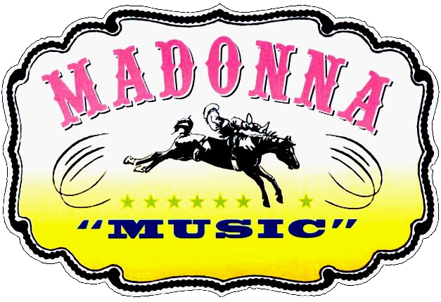
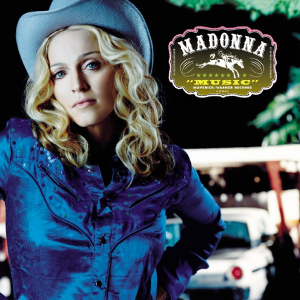
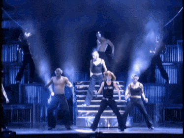
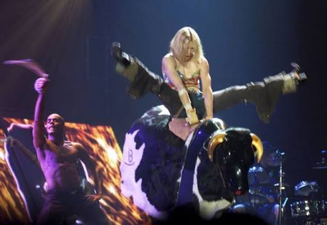

Music es el octavo álbum de estudio de Madonna. Lanzado a la venta en el 2000, surgió de la idea de hacer un álbum de remixes de Ray of Light junto al productor Mirwais Ahmadzaï llamado "Veronica Electronica". Las sesiones con Ahmadzaï eventualmente llevaron a música nueva y la idea de los remixes de Ray of Light fue descartada para dar paso a un álbum totalmente nuevo. En este proyecto, la Reina del Pop continúa con el sonido electrónico que caracterizó a Ray of Light (trayendo de vuelta a William Orbit en un par de temas) y lo mezcla con sonidos influenciados por el country estadounidense y el folk. Críticamente, fue universalmente aclamado y ha influenciado a artistas como FKA twigs y Troye Sivan. Comercialmente, este álbum fue exitoso y le dio a Madonna su doceavo y último #1 en el Billboard Hot 100 de E.E.U.U. con la canción "Music" que se mantuvo en la cima por 4 semanas. Además, "Don't Tell Me" alcanzó el #4 y la canción "American Pie" fue incluída en el álbum debido a que llegó al #2 en Reino Unido. Esta era también presentó el Drowned World Tour, primera gira de Madonna desde el Girlie Show de Erotica en 1993 y gira en la que presentaría en vivo por primera vez canciones de Bedtime Stories, Ray of Light y Music. Fue su primer álbum en llegar al #1 del Billboard 200 de E.E.U.U. desde Like a Prayer en 1989.

Madonna cantando "Music" mientras hace sentadillas a los 43 años (y 10 meses después de dar a luz a su segundo hijo) en el Drowned World Tour de 2001.

Madonna cantando "Human Nature" sobre un toro mecánico en el Drowned World Tour de 2001.